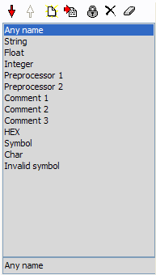
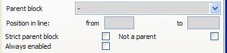
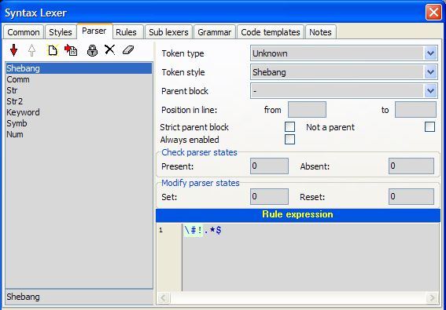
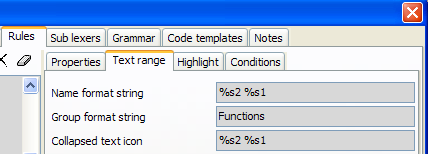

Overview
[This is documentation from original EControl Syntax SDK, also available at www.econtrol.ru in CHM file.]
Lexer is a configuration of syntax analysing component. It is a resource, not a separate code implementation. No programming is required to create support for new text file format.
Syntax analysis is based on the syntax rules. There are three type of rules:
- Token rules are intended to extract tokens from the text.
- Block rules are intended to find text ranges (group of tokens), line separators and keywords.
- Sublexer rules are intended to define regions where nested lexers will act.
Styles are used to define text drawing params. It is possible multiple stylies will be applied to a portion of text. Style merging procedure specifies sequence in which styles are merged into canvas params.
Lexer library is a collection of lexers. It allows to automate file extension managing for selecting appropriate lexer, constructing filter for Open/Save dialogs, export/import lexers into files.
If you use nested lexers it's strongly recomendned to include both master and slave lexers into lexer library.
Lexer configuration dialog
This dialog is used for to customize lexer. It includes:
- Common properties
- Text styles
- Token rules
- Block rules
- Sublexer rules
- Code templates
- Sample text

Button commands
- Apply - Applies changes without dialog closing.
- OK - Applies changes.
- Cancel - Cancels changes.
Preview text
At the bottom of the dialog editor the sample code is placed. Any change of lexer configuration effects on the sample code. This preview text is also used in the "Customize lexer styles" dialog that is intended to change only styles.
Common page
- Lexer name - name of the lexer. Usually it is a name of file format/language.
- File extensions - list of file extensions to autodetect lexer.
- Token type names - are associated with the integer value (line number). They are used to simplify token type assignment to the token rules and selecting a set of token types for conditions of block rules. Token type is integer value in the range 0..31.
- Default style - default style which first is applied to the editor canvas. If default style is not specified, default font and color properties are used.
- Selection mark style - style for selected block in the syntax memo. If no style is selected to draw selection in the editor default foreground and background are used.
- Search mark style - style to mark out search results in the syntax memo. If no style is selected to draw search results in the editor default foreground and background are used.
- Current line style - style that is used to draw current line (line with the caret). If you don't want highlight current line select style type "Only Background" and color of background "None".
- Skip spaces while parsing - checkbox specifies how to process space characters (space, tab, CR, LF, FF). If it is checked all space characters will be skipped before token rules checking, otherwise they will not be skipped.
- Do not skip end of line - specifies whether line breaks should be parsed.
- Restart analysis from line start - if it is ON, parser results are cleared starting from start of line where text was changed, otherwise they are cleared after position of text changing.
- Always synchronized block analysis - specifies whether block analysis should be always performed with text parsing, otherwise analyzer tries to perform block analysis after whole text was parsed.
- Disable full refresh if text size is greater - specifies threshold after which full refresh (when text is changed) of sytactical obects will not be performed. If this value is 0 (by default), full refreshing is disabled. Full refreshing takes more time, but sometimes it may be useful for some parser's rules (for example, parser expression ".*" will not work correctly without full refresh).
Common properties
All styles and rules are items derived from the same base class, so working with list is common for them.
|
|
|

Parent restrictions for rules

All rule classes are derived from same base class. In this class special conditions for rule enabling are defined. You can enable rule only within (out) some block.
Parent block - block rule of opened text range (when rule is being checked) that is verified for presence.
Strict parent block - flag that specifies that parent block must be immediate parent for the rule.
Not a parent - flag that specifies that "parent block" is not a parent of the rule.
Example:
|
|
For the detection "var" range "implementation" is a parent, but not a strint parent, range "function" is parent and strict parent.For "function" range detecting you can specify parent "implementation". If you set strict parent flag, nested functions will not be detected. Such restrictions will work only in units (where "implementation" section is present). Or you may specify that "function" range have not a "interface" parent (set flag "not a parent") in this case function will be detected not only in units but in programm file or in scripts.
Misc
Always enabled - flag that specifies that this rule will be active not only in the current lexer but in the nested lexers too. For example, in Pascal function we have "asm" range with reference to nested "Assembler" lexer. We can specify that "Comment" token rule is always enabled. In this case in the Assembler block Pascal comments will be highlighted correctly, otherwise this rule will be inaccessible in Assembler block.
Token rules (parser)
- Overview
- Properties of tokens
- Expression examples

Overview
Token is an text element. Tokens have start and end position in text. Tokens can not intersect each other.
- They are defined by the parsing procedure, after which token array is created. Token array is sequential, i.e. end position of token will be less start position of the next token.
- Token rules are checked sequentially. After first successful checking of rule loop is stopped.
- Token rules are intended for detecting tokens. You can control token rules in the page "Parser" of the lexer configuration dialog.
Properties of tokens
Token type - integer value that will be assigned to all tokens detected by means of this rule. It's required only if you want use this tokens in the block detection algorithm. To simplify token type assignment "Token type names" are used.
Token style - style that will be applied to all tokens detected by means of this rule.
Rule expression - regular expression for detecting token. Regular expression is applied to current analysis position. If it matches, current position is incremented on the length of found token and token rules loop is stopped. Default modifiers for regular expression: (?imxr-s), i.e. ignore case, multiline (^, $ - start, end of line), supports comments, full russian charset, any metacharacter "." (dot) does not include end of line "\n". Rule expression is most robust operation in lexer configuration. Below some examples are given.
Expression examples
Identifier
[a-z_]\w*
First character is literal, others are word characters (including digits).
String
'.*?('|$)
From the single quote to the next single quote or to the end of line. Multiplier is "non-greedy" to check next conditions ('|$) before incrementing position. ('|$) means either single quote or end of line.
Float const
#with exp. dot is optional \d+ \.? \d+ e [\+\-]? \d+ |#without exp. dot is required\d+ \. \d+
\d+ - means at least one digit. \.? - means optional dot[\+\-]? - means optional "+" or "-".
Integer const
\d+
Note: integer const must be listed after float const because of any float will be treated as integer until dot or exponent symbols.
Single line comment
//.*
Any character from // to end of line. Metacharacter dot does not include end of line, so it is optional to place $ end of line metacharacter at the end of expression.
Multi-line comment
(?s)\{.*?(\}|\Z)
We turn on modifier "s" to include end of line in metacharacter "." (dot). It will select text from symbol "{" to the symbol "}" or to the end of text. If we skip end of text, i.e. (?s)\{.*?\}, it will cause comment not detected.
Multi-line define
(?-i)\#define(.*\\\s*\n)* # lines with line folding .* # last line
This is an example of complex expression for preprocessor directive "define". \#define - means that token starts with #define (.*\\\s*\n)* - means multiple any character until symbol "\", then it skips spaces, includes end of line. All this expression can be repeated some times (or not once)..* - means all characters until end of line.
Block rules
- Block types
- Text ranges
- Highlight
- Conditions

Block rules are applied to the array of tokens. Block rules are checked after each token detection.
Block types
specifies action after successful conditions check.
There are four rule types:
- Tag detector - sets style of token (with Identifier index)
- Line separator - creates line separator
- Range start - creates text range
- Range end - closes text range.
Some properties of block rule use indexes. All indexes are back offset from the indexing reference point.
There two case of reference point:
1. Start of conditions (index 0 corresponds to the first checked token). 2. End of conditions (index 0 corresponds to the last checked token).
Rule "class derived" of Pascal lexer:0. EQUAL <identifier>1. EQUAL <symbol> 2. SKIP <symbol, identifier>3. EQUAL <symbol>4. EQUAL <identifier>5. EQUAL <symbol>
TComponent = class ( TPersistent , IInterface , IInterfaceComponentReference )Cond-start 9 8 7 6 5 4 3 2 1 0Cond-end 1 0 -1 -2 -3 -4 -5 -6 -7 -8
Due to there is SKIP condition in this rule, we do not know length of token sequence that satisfies this rule. To specify indexing reference point use . flag. When it is True indexing reference point - conditions end, otherwise indexing reference point - conditions start. In this example we must set this flag to True.
- back offset of identifier token. In example above identifier index may be 1 (token "TComponent") or -1 (token "class"). The default value of the Identifier Index is 0. It is not necessary to specify this property.
- back offset of text range start/end. It is used only for "Range start/end" rules.
- name of grammar rule which is used instead of conditions sequence to test current sequence of tokens.
- are common for all rules, see "Common properties".
- integer value that is used to filter text ranges by the syntax tree view. Default is 0, i.e. no filtering performed by the syntax tree.
- specifies token type which will be assigned to identifier token. This property available only for "Tag detector" rules.
- specifies position of the line separator (above or under token with Ident Index). This property available only for "Line separator" rules.
- reference to the block rule that will close text range, reference to the block rule, text range of which will be closed. This property available only for "Range start" rules.
- reference to the block rule text range of that will be closed by this rule. This property available only for "Range end" rules.
- When this flag is True, when closing text range condition checks identifiers of range start and range end. Only for "Range end" rules.
- specifies that block rules checking loop must be broken if this rule is successful.
Text ranges
These properties are applied to created text ranges, i.e. they are used only for rule type "Range start".
- is used for formatting text range name that is used in TSyntaxTreeView. If it is empty, Identifier token will be taken as the range name. See Name formatting (for block rules) to understand principles of name formatting.
- is used for formatting text range group name that is used in TSyntaxTreeView. If it is empty, there is no group for this text range. If any text ranges within one parent have identical group name, Group node will be created with caption of this group name and all these text ranges will be children of this group node. See Name formatting (for block rules) to understand principles of building name format.
- is used for formatting string which is used to paint collapsed text icon (text displayed when text range is collapsed). When this property is empty collapsed text icon is not displayed (collapsed text range is shown as line separator).
- when this Flag is True, opened text range will be closed at end of text. Only for "Range start" rules.
- specifies whether rule should close previously opened text range before opening new text range.
- specifies whether text range should be closed immediately after opening. Text range will occupy tokens that was used when checking conditions or grammar rule.
- specifies whether text range must be displayed in TSyntaxTreeView control. Only for "Range start" rules.
- specifies whether text range can be collapsed by user. Only for "Range start" rules.
- specifies whether text ranges of this rule must be pined together by the staple.
Highlight
- For "Range start" rule specifies style of all token in the associated text ranges. For "Tag detect" rule specifies style of token with Ident Index. For "Line separator" rule specifies line color of separator.
- specifies highlighting region:
|
| ||
|
| ||
|
| ||
|
|
- when this flag is True, all lines of text range will be highlighted (will have the same foregound and background colors) with the specified Style. If style have ftBackGround type only backgound will be highlighted. Only for "Range start" rules.
- available only if "Highlight lines of block" is True. It specifies style of the selection in Syntax Memo. If it is True, inverted style colors will be used to paint selection, else default selection style will be used. Only for "Range start" rules.
Active highlighting specify that text range may be highlighted only when caret is placed in some predefined position. Only for "Range start" rules.
- specifies caret position in text range:
|
| ||
|
| ||
|
| ||
|
| ||
|
|
- specifies that only nearest text range of this rule must be selected for active highlighting. For example, when we highlight "begin ... end" block, we want to highlight only nearest block.
Here you may specifier styles and image indexes for the tree node associated with text range and group tree node created for this text range.
Conditions
Conditions specify current position validation for this rule. If validating is successful corresponded action defined by the block rule type will be performed. There are any number of condition entries. Each condition have next attributes:
- may be one of the following:
|
| ||
|
| ||
|
| ||
|
|
If key list is empty second part of condition is omitted.
- is a set of token types to check condition.
- is an array of strings to check condition.
- specifies whether it compares strings without case sensitive.
Name formatting (for block rules)

Name format string is used for formatting Name, Group name and Collapsed text icon of the text range.
In format string all entries of kind: %sINT, %eINT, %psINT, %peINT will be replaced with the token, index of which will be calculated on the assumption of the format expression.
Letters specify the reference index.
- %s - start of current text range
- %e - end of current text range
- %ps - start of parent text range
- %pe - end of parent text range
There may be several entries of "p" metacharacter. For example, %pps - means start of parent of parent text range.
Also after these specifiers you may use "L" or "Z":
- L - defines string from line start to the token (including this token)
- Z - defines string from the token to the end of line (including this token)
For example: %SL2 - defines string from line start to second token from text range start.
Token index will be calculated as reference index minus Index (INT).
Extension of name formatting syntax
Syntax %(S|E)P*(L|Z)?[0-9]+
is expanded to %(S|E)P*([\[]<token>[\]]<offset>?)?
where <token> is a specific token that is "searched from the specified starting point (S for first token in the range , or E for the last token) towards the respective range end (up- or downwards). The search-direction is kept in the variable "rngdir" which is set in the "S" , "E" decision.
Example:
".... for x = 1 to 12 do ...... end ; ..." 0 1 2 3 4 5 6 ... 27 28
range-start = "for", range-end = "end" then "...%s[to] ..." will skip forward to the token "to" (with index 4). The token values are searched on a "asis" basis, there is no case-insensitivity option yet. A "numeric number following the token value will define an <offset> relative to the found token. For this clause, the variable "idx" is not set by taking the static numeric value as in "...%s2 ..." , instead the "found token index" is kept.
For "%S..." the search starts at idx=0 up to max 28. ---> rngdir = +1; For "%E..." the search starts at idx=28 downto min 0. ---> rngdir = -1;
Note: Avoid to search for tokens that can occur at multiple places (for example a ";" between statements).
The above syntax is simple as it allows to identify the block-start-tokens "for x = 1 to 12 do"block-body anything after block-start tokens up toblock-end-tokens "end ;"
but many syntax formats do not trivially support this separation.
Any such clause (either absolute or given by token value) can "start a token range" by additionally specifying:
%(S|E)...~(S|E)P*[0-9]+
or
%(S|E)...~(S|E)P*([\[]<token>[\]]<offset>?)?
or
%(S|E)...~[\[]<token>[\]]
The first form uses the static index specification to define the end-range: "%s0~s3" results in "for x = 1" (tokens 0, 1, ... 3)
The 2nd form uses the new syntax to "search for an end-token beginning at the starting range index (idx) up- or down-wards. "%s0~s[do]" results in "for x = 1 to 12 do" (tokens 0, 1, ... 6) if a search is not satisfied, the complete range up to "e0" is taken. Because of the same "S", the search starts with "TagStr[idx]" ...
"s0~e[do]" results in the same string, but starts at the final "end" of the block and scanning downwards. Caution: This may produce WRONG results if nested loops are scanned ! I could not find a valid representation of "range-start" token-streams, the range-body alone and/or the range-end token-stream.Such information may be helpful to better display blocks and/or collapse display of the "block-body" alone.
The 3rd form is an abbreviation where the S/E indicators are taken to be identical as the starting point S1~[do]1" results in "x = 1 to 12" (tokens 1, 2, ... 5)
The <offset> "1" will here skip back by 1 from the found token "do". The range-end is kept in the variable "to_idx".
The "token-value" to search for can not be whitespace #00..#20. Leading and trailing whitespace withing the "...[vvvvvvv] ..." enclosed by [ and ] characters sequence is removed before searching. the "vvvvvv" can contain escaped characters like "... [\]] ..." to allow "[" and/or "]" to be part of the value. The \r, \n, \f ...escapes are not supported here.
The token accumulation simply (?) takes all tokens from "idx" ... "to_idx" and builds a string by appending all tokens with ONE " " (blank) as separating delimiter. There is no process to keep the original token positions within the source line(s) and any whitepace including cr/lf's there. This may be an addition but I currently do not see a need for it.
c) "ranges as specified above may accumulate many tokens and it may be desirable to "limit" the result string. This can be done by using another operand syntax
%(S|E)...~[0-9]+
or
%(S|E)...~(S|E)([\[]<token>[\]]<offset>?)?~[0-9]+
or
%(S|E)...~[\[]<token>[\]]~[0-9]+
In all three forms the "~" is immediately followed by a numeric value which is interpreted as "maximum number of tokens in the substituted string", if the range takes MORE than this maximum The value is internally kept in the variable "rngmax" below. When the result string is accumulated (taking all tokens between "idx" up- resp. down-to "to_idx") the number of appended tokens can not go beyond "rngmax". If this happens the result will be created in the form "t-1 t-2 -- t-max ..." with the ellipsis string " ..." appended.
Example:
function TMyClass.MyFunction ...
we have rule:0| .1| [any Identifier]2| function
reference start of text range will point to ".", soformat string"%s2 => %s1.%s-1"results"function => TMyClass.MyFunction"
Sub lexers

Nested lexers allow to use external lexer for the defined text ranges. For example, in HTML we want that scripts indide "<script>...</script>" will be processed with the corresponded lexer (JavaScript, VBScript, etc). Sublexer rules are intended for this purpose.
To detect text ranges two regular expression are used: "Start condition" and "End condition". Text range will exist from the end of the "Start condition" to the start of the "End condition".
For example, we can use Assembler lexer inside Pascal:
- Sub lexer = "Assembler"
- Start condition = "asm"
- End condition = "end"
In this case text range will be from the next character after "asm" to the previous character before "end".If text range must start from the begin of text, set property "Start at the begin of text".If text range must be closed at end of text, set property "End at the end of text".
Lexer inheritance
If you want to extend some lexer without modifying it, you can do this:
- Create new lexer.
- Create "Sublexer" rule for the base lexer from start to end of text.
- Create new rules and mark them as "Always enabled".
So you create inherited lexer which have all rules of the base lexer plus rules defined in the derived lexer.
Grammar

Grammar rules allow testing for complex sequences of tokens.Grammar rules are separated by semicolons.
Syntax of grammar definitions:
Rule ::= RuleName '=' Branch_list ';'Branch_list ::= Item_list | Branch_list '|' Item_listItem_list ::= Element | Item_list Element Element ::= Item | Item '*' | Item '+' | Item '?' Item ::= RuleName | '"' Term '"' | ''' Term ''' | '<' TokenType '>' | '(' Item_list ')'
where:
- "Term" - case insensitive string
- 'Term' - case sensitive string
- TokenType - name of token type
- RuleName - name of grammar rule
Repeaters:
- '*' - any number of entries including none
- '+' - at least one entry
- '?' - one entry or none
There are special grammar rule "Skip". It is used after each match operation to skip unused tokens (for example, comments).